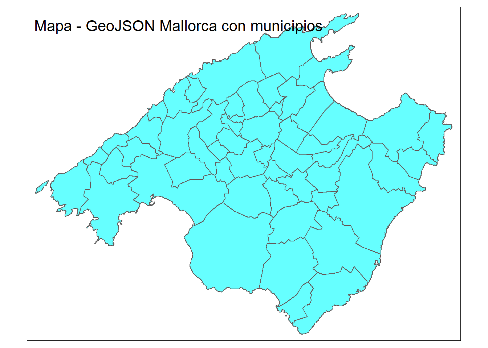

Se entrega en grupos que deben de estar constituidos en la actividad de grupos. Los grupos son de 2 o 3 ESTUDIANTES, loa caso especiales consultadlos con el profesor para que los autorice.
tibble [52,088 × 16] (S3: tbl_df/tbl/data.frame)
$ date : Date[1:52088], format: "2023-12-17" "2023-12-17" ...
$ id : chr [1:52088] "49752748" "935239498971961146" "24932587" "782518268756227225" ...
$ price : num [1:52088] 2636 107 50 683 62 ...
$ longitude : num [1:52088] 2.71 3.12 2.62 3.21 3.24 ...
$ latitude : num [1:52088] 39.8 39.3 39.6 39.5 39.4 ...
$ property_type : chr [1:52088] "Entire home" "Entire home" "Entire rental unit" "Entire villa" ...
$ room_type : chr [1:52088] "Entire home/apt" "Entire home/apt" "Entire home/apt" "Entire home/apt" ...
$ accommodates : num [1:52088] 14 5 2 10 4 8 5 2 6 10 ...
$ bedrooms : num [1:52088] NA NA NA NA NA NA NA NA NA NA ...
$ beds : num [1:52088] 9 4 1 7 3 5 3 3 5 5 ...
$ number_of_reviews : num [1:52088] 0 0 124 0 18 0 0 73 0 0 ...
$ review_scores_rating : num [1:52088] NA NA 4.88 NA 4.89 NA NA 4.73 NA NA ...
$ review_scores_value : num [1:52088] NA NA 4.64 NA 4.83 NA NA 4.64 NA NA ...
$ host_is_superhost : logi [1:52088] FALSE FALSE TRUE FALSE FALSE FALSE ...
$ host_name : chr [1:52088] "Novasol" "Mallorca Villa Selection" "Juana" "Homerti" ...
$ neighbourhood_cleansed: chr [1:52088] "Sóller" "Santanyí" "Palma de Mallorca" "Felanitx" ...
listings
Hemos cargado el objeto listings_common0_select que contiene los datos de los 4 periodos de apartamentos de inside Airbnb de Mallorca con unas 15 ó 16 variables.
Notemos que cada apartamento:
queda identificado por id y por date que nos da el periodo en la que apareció el dato.
así que cada apartamento aparece 4 veces ya que hemos elegido solo los apartamentos que aparecen en las 4 muestras.
Las muestras son 2023-12-17, 2024-03-23, 2024-06-19, 2024-09-13,
spc_tbl_ [344,651 × 6] (S3: spec_tbl_df/tbl_df/tbl/data.frame)
$ listing_id : num [1:344651] 69998 69998 69998 69998 69998 ...
$ id : num [1:344651] 881474 4007103 4170371 4408459 4485779 ...
$ date : Date[1:344651], format: "2012-01-24" "2013-04-02" ...
$ reviewer_id : num [1:344651] 1595616 3868130 5730759 5921885 810469 ...
$ reviewer_name: chr [1:344651] "Jean-Pierre" "Jo And Mike" "Elizabeth" "Jone" ...
$ comments : chr [1:344651] "This place was charming! Lorenzo himself is a very warm and engaging host and made us feel very welcome. \r<br/"| __truncated__ "We had a four night stay at this gorgeous apartment and it was absolutely perfect. It's really pretty, beautifu"| __truncated__ "Lor's apartment looks exactly like the pictures! It is perfectly located for historic Palma - close to the Cath"| __truncated__ "Wonderful place! 10/10. Charming, spacious and comfortable. Looks even more splendid than in the pictures. The "| __truncated__ ...
- attr(*, "spec")=
.. cols(
.. listing_id = col_double(),
.. id = col_double(),
.. date = col_date(format = ""),
.. reviewer_id = col_double(),
.. reviewer_name = col_character(),
.. comments = col_character()
.. )
- attr(*, "problems")=<externalptr>
Código
head(reviews)
# A tibble: 6 × 6
listing_id id date reviewer_id reviewer_name comments
<dbl> <dbl> <date> <dbl> <chr> <chr>
1 69998 881474 2012-01-24 1595616 Jean-Pierre "This place was charm…
2 69998 4007103 2013-04-02 3868130 Jo And Mike "We had a four night …
3 69998 4170371 2013-04-15 5730759 Elizabeth "Lor's apartment look…
4 69998 4408459 2013-05-03 5921885 Jone "Wonderful place! 10/…
5 69998 4485779 2013-05-07 810469 Andrea "My boyfriend and I, …
6 69998 4619699 2013-05-15 3318059 Devii "We had a very last m…
neighbourhoods.csv
Son dos columnas y la primera es una agrupación de municipios (están NA) y la segunda es el nombre del municipio
spc_tbl_ [53 × 2] (S3: spec_tbl_df/tbl_df/tbl/data.frame)
$ neighbourhood_group: logi [1:53] NA NA NA NA NA NA ...
$ neighbourhood : chr [1:53] "Alaró" "Alcúdia" "Algaida" "Andratx" ...
- attr(*, "spec")=
.. cols(
.. neighbourhood_group = col_logical(),
.. neighbourhood = col_character()
.. )
- attr(*, "problems")=<externalptr>
Código
head(municipios)
# A tibble: 6 × 2
neighbourhood_group neighbourhood
<lgl> <chr>
1 NA Alaró
2 NA Alcúdia
3 NA Algaida
4 NA Andratx
5 NA Ariany
6 NA Artà
neighbourhoods.geojson
Es el mapa de Mallorca, o podemos leer así:
Código
library(sf)library(tmap)# Leer el archivo GeoJSONgeojson_sf <- sf::st_read("data/mallorca/2024-09-13/neighbourhoods.geojson")
Reading layer `neighbourhoods' from data source
`C:\Users\ricuib\Documents\Docencia_24_25\MatGIN\Taller_evaluable_24_25\tallerMat3_24_25\data\mallorca\2024-09-13\neighbourhoods.geojson'
using driver `GeoJSON'
Simple feature collection with 53 features and 2 fields
Geometry type: MULTIPOLYGON
Dimension: XY
Bounding box: xmin: 2.303195 ymin: 39.26403 xmax: 3.479028 ymax: 39.96236
Geodetic CRS: WGS 84
Código
# Crear un mapa# interactivotmap_mode("plot") # Cambiar a modo view/plot que es interactivo/estáticotm_shape(geojson_sf) +tm_polygons(col ="cyan", alpha =0.6) +tm_layout(title ="Mapa - GeoJSON Mallorca con municipios")

Tenéis que consultar en la documentación de inside Airbnb para saber que significa cada variable. Os puede ser útil leer los ficheros DATA_ABB_modelo_de_datos.html y DATA_ABB_modelo_de_datos.pdf en los que se explica el modelo de datos de inside Airbnb y como se cargan en el espacio de trabajo.
Responder las siguientes preguntas con formato Rmarkdown (.Rmd) o quarto (.qmd) y entregad la fuente un fichero en formato html como salida del informe. Se puntúa la claridad de la respuesta, la calidad de la redacción y la corrección de la respuesta.
Pregunta 1 (1punto)
Del fichero con los datos de listings listing_common0_select.RData calcula los estadísticos descriptivos de las variable price y de la variable number_of_reviews agrupados por municipio y por periodo.
vh
Presenta los resultados con una tabla de kableExtra.
Pregunta 2 (1punto)
Consideremos las variables price y number_of_reviews de Pollença y Palma del periodo “2024-09-13”, del fichero listing_common0_select.RData. Estudiad si estos datos se aproximan a una distribución normal gráficamente. Para ello, dibujad el histograma, la función “kernel-density” que aproxima la densidad y la densidad de la normal de media y varianza las de las muestras de las variables price (para precios mayores de 50 y menores de 400) y number_of_reviews para Palma y
Pollença
{r} price2= listings_common_select %>% filter (neighbourhood_cleansed %in% c(“Pollença”, “Palma de Mallorca”) & date == “2024-09-13”) # juntamos los precios de los dos municipios str(price2) price2=price2$price str(price2) # filtramos los precios para que estén entre 50 y 400 price2=na.omit(price2[price2>50 & price2<400]) mean_price=mean(price2) sd_price=sd(price2) mean_price sd_price
primera manera para pintar el histograma con las curvas
hist (price2, freq = FALSE, col = “lightblue”, main = “Histograma de precios Pollença y Palma”, xlab = “Precios” ,ylab = “Densidad muestral” ,ylim=c(0,0.006))
lines (density(price2), col = “red”, lwd = 2)
curve(dnorm(x, mean = mean_price, sd = sd_price), col = “blue”, lwd = 2, add = TRUE) legend (“topright”, legend = c (“Densidad muestral”,“Curva normal esperada”), col = c(“red”,“blue”), lty = 1, lwd = 2, cex = 0.7)
segunda manera: con ggpolt 2
Supongamos que price2 es el vector de datos
mean_price <- mean(price2) sd_price <- sd(price2)
Data frame de precios
data <- data.frame(price2 = price2)
Genera el gráfico con el título centrado
ggplot(data, aes(x = price2)) + geom_histogram(aes(y = ..density..), bins = 30, fill = “lightblue”, color = “black”) + geom_density(color = “red”, size = 1) + stat_function (fun = dnorm, args = list(mean = mean_price, sd = sa_price), color = “blue”, size = 1) + labs ( title = “Histograma de precios Pollença y Palma-09-13”, # Título x = “Precios”, # Etiqueta del eje x y = “Densidad muestral” # Etiqueta del eje Y) + ylim(0, 0.006) + theme_minimal(0) + theme( plot.title = element_text(hjust = 0.5)) # Centra el título
Pregunta 3 (1punto)
Con los datos de listings_common0_select de todos los periodos, contrastar si la media del precio en Pollença es igual a la de Palma contra que es mayor que en Palma para los precios mayores que 50 euros y menores de 400. Construid la hipótesis nula y alternativa, calculad el p-valor y el intervalo de confianza asociado al contraste. Justifica técnicamente la conclusión del contraste.
Pregunta 4 (1punto)
Con los datos de listings_common0_select, contrastar si las medias de los precios en Palma entre los periodos “2023-12-17” y “2024-03-23” son iguales contra que son menores en 2023. Construid la hipótesis nula y alternativa, calculad el p-valor y el intervalo de confianza asociado al contraste. Haced un diagrama de caja comparativo de los precios por municipio por periodo y coméntalo.
Pregunta 5 (1punto)
Calcular la proporción de apartamentos de la muestra “2024-03-23” con media de valoración review_scores_rating mayor que 4 en Palma y en Pollença son iguales contra que son distintas. Construid un intervalo de confianza para la diferencia de proporciones.
Pregunta 6 (1punto)
Calcular la proporción de apartamentos de los periodos “2023-12-17” y “2024-03-23” con media de valoración review_scores_rating mayor que 4 en Palma y en Pollença son iguales contra que son distintas.
Pregunta 7 (1punto)
La Zipf’s law es una ley empírica que dice que la frecuencia de las palabras en un texto es inversamente proporcional a su rango. Decidid si la ley se ajusta a los datos de la longitud de los comentarios de los apartamentos de la muestra “2023-12-17” de Palma. Para ello, haced un análisis de regresión lineal de la frecuencia de las longitudes de los comentarios de los apartamentos de Palma y el rango de las longitudes de los comentarios. Justificad la respuesta, estadísticamente y gráficamente.
Como ayuda estudiar el siguiente código, utilizadlo y comentadlo.
Código
library(stringr)head(reviews)
# A tibble: 6 × 6
listing_id id date reviewer_id reviewer_name comments
<dbl> <dbl> <date> <dbl> <chr> <chr>
1 69998 881474 2012-01-24 1595616 Jean-Pierre "This place was charm…
2 69998 4007103 2013-04-02 3868130 Jo And Mike "We had a four night …
3 69998 4170371 2013-04-15 5730759 Elizabeth "Lor's apartment look…
4 69998 4408459 2013-05-03 5921885 Jone "Wonderful place! 10/…
5 69998 4485779 2013-05-07 810469 Andrea "My boyfriend and I, …
6 69998 4619699 2013-05-15 3318059 Devii "We had a very last m…
Call:
lm(formula = tbl2$Freq ~ tbl2$Rank)
Residuals:
Min 1Q Median 3Q Max
-873.9 -663.3 -175.3 368.6 3533.5
Coefficients:
Estimate Std. Error t value Pr(>|t|)
(Intercept) 1768.652 71.864 24.61 <2e-16 ***
tbl2$Rank -4.014 0.197 -20.37 <2e-16 ***
---
Signif. codes: 0 '***' 0.001 '**' 0.01 '*' 0.05 '.' 0.1 ' ' 1
Residual standard error: 869.5 on 614 degrees of freedom
Multiple R-squared: 0.4033, Adjusted R-squared: 0.4024
F-statistic: 415.1 on 1 and 614 DF, p-value: < 2.2e-16
Código
sol2=lm(tbl2$Freq~tbl2$Log_Rank)summary(sol2)
Call:
lm(formula = tbl2$Freq ~ tbl2$Log_Rank)
Residuals:
Min 1Q Median 3Q Max
-809.74 -473.62 4.57 383.09 1562.70
Coefficients:
Estimate Std. Error t value Pr(>|t|)
(Intercept) 6969.44 141.50 49.26 <2e-16 ***
tbl2$Log_Rank -1175.92 25.39 -46.32 <2e-16 ***
---
Signif. codes: 0 '***' 0.001 '**' 0.01 '*' 0.05 '.' 0.1 ' ' 1
Residual standard error: 530.9 on 614 degrees of freedom
Multiple R-squared: 0.7775, Adjusted R-squared: 0.7772
F-statistic: 2146 on 1 and 614 DF, p-value: < 2.2e-16
Código
sol3=lm(tbl2$Log_Freq~tbl2$Log_Rank)summary(sol3)
Call:
lm(formula = tbl2$Log_Freq ~ tbl2$Log_Rank)
Residuals:
Min 1Q Median 3Q Max
-4.1149 -0.4810 0.0715 0.5346 1.2697
Coefficients:
Estimate Std. Error t value Pr(>|t|)
(Intercept) 19.85286 0.20769 95.59 <2e-16 ***
tbl2$Log_Rank -3.00352 0.03726 -80.61 <2e-16 ***
---
Signif. codes: 0 '***' 0.001 '**' 0.01 '*' 0.05 '.' 0.1 ' ' 1
Residual standard error: 0.7793 on 614 degrees of freedom
Multiple R-squared: 0.9137, Adjusted R-squared: 0.9135
F-statistic: 6497 on 1 and 614 DF, p-value: < 2.2e-16
Ejecutar el código
---title: "ENUNCIADO taller en grupo Mat3 GIN 2024-2025"author: "Taller"lang: esformat: html: theme: superhero toc: true toc_depth: 4 html-math-method: katex code-tools: true code-fold: true collapse: true keep-md: true code-overflow: wrap---# Instrucciones para el tallerSe entrega en grupos que deben de estar constituidos en la actividad de grupos. Los grupos son de 2 o 3 ESTUDIANTES, loa caso especiales consultadlos con el profesor para que los autorice.**Enlaces y Bibliografía**- [R for data science, Hadley Wickham, Garret Grolemund.](https://r4ds.had.co.nz/)- [Fundamentos de ciencia de datos con R.](https://cdr-book.github.io/)- [Tablas avanzadas: kable, KableExtra.](https://haozhu233.github.io/kableExtra/awesome_table_in_html.html)- [Geocomputation with R, Robin Lovelace, Jakub Nowosad, Jannes Muenchow](https://r.geocompx.org/)- Apuntes de R-basico y tidyverse moodel MAT3.## Objetivo MALLORCALeeremos los siguientes datos de la zona de etiqueta `mallorca` con el código siguiente:::: {.cell}```{.r .cell-code}load("clean_data/mallorca/listing_common0_select.RData")ls()```::: {.cell-output .cell-output-stdout}```[1] "listings_common0_select"```:::```{.r .cell-code}str(listings_common0_select)```::: {.cell-output .cell-output-stdout}```tibble [52,088 × 16] (S3: tbl_df/tbl/data.frame) $ date : Date[1:52088], format: "2023-12-17" "2023-12-17" ... $ id : chr [1:52088] "49752748" "935239498971961146" "24932587" "782518268756227225" ... $ price : num [1:52088] 2636 107 50 683 62 ... $ longitude : num [1:52088] 2.71 3.12 2.62 3.21 3.24 ... $ latitude : num [1:52088] 39.8 39.3 39.6 39.5 39.4 ... $ property_type : chr [1:52088] "Entire home" "Entire home" "Entire rental unit" "Entire villa" ... $ room_type : chr [1:52088] "Entire home/apt" "Entire home/apt" "Entire home/apt" "Entire home/apt" ... $ accommodates : num [1:52088] 14 5 2 10 4 8 5 2 6 10 ... $ bedrooms : num [1:52088] NA NA NA NA NA NA NA NA NA NA ... $ beds : num [1:52088] 9 4 1 7 3 5 3 3 5 5 ... $ number_of_reviews : num [1:52088] 0 0 124 0 18 0 0 73 0 0 ... $ review_scores_rating : num [1:52088] NA NA 4.88 NA 4.89 NA NA 4.73 NA NA ... $ review_scores_value : num [1:52088] NA NA 4.64 NA 4.83 NA NA 4.64 NA NA ... $ host_is_superhost : logi [1:52088] FALSE FALSE TRUE FALSE FALSE FALSE ... $ host_name : chr [1:52088] "Novasol" "Mallorca Villa Selection" "Juana" "Homerti" ... $ neighbourhood_cleansed: chr [1:52088] "Sóller" "Santanyí" "Palma de Mallorca" "Felanitx" ...```::::::**listings**Hemos cargado el objeto `listings_common0_select` que contiene los datos de los 4 periodos de apartamentos de inside Airbnb de Mallorca con unas 15 ó 16 variables.Notemos que cada apartamento:- queda identificado por id y por date que nos da el periodo en la que apareció el dato.- así que cada apartamento aparece 4 veces ya que hemos elegido solo los apartamentos que aparecen en las 4 muestras.- Las muestras son 2023-12-17, 2024-03-23, 2024-06-19, 2024-09-13,::: {.cell}```{.r .cell-code}unique(listings_common0_select$date)```::: {.cell-output .cell-output-stdout}```[1] "2023-12-17" "2024-03-23" "2024-06-19" "2024-09-13"```::::::**reviews**Estos datos necesitan leerse de forma adecuada, las columnas 1, 2 y 4 deben ser de tipo `character` las otras son correctas::: {.cell}```{.r .cell-code}reviews=read_csv("data/mallorca/2023-12-17/reviews.csv.gz")str(reviews)```::: {.cell-output .cell-output-stdout}```spc_tbl_ [344,651 × 6] (S3: spec_tbl_df/tbl_df/tbl/data.frame) $ listing_id : num [1:344651] 69998 69998 69998 69998 69998 ... $ id : num [1:344651] 881474 4007103 4170371 4408459 4485779 ... $ date : Date[1:344651], format: "2012-01-24" "2013-04-02" ... $ reviewer_id : num [1:344651] 1595616 3868130 5730759 5921885 810469 ... $ reviewer_name: chr [1:344651] "Jean-Pierre" "Jo And Mike" "Elizabeth" "Jone" ... $ comments : chr [1:344651] "This place was charming! Lorenzo himself is a very warm and engaging host and made us feel very welcome. \r<br/"| __truncated__ "We had a four night stay at this gorgeous apartment and it was absolutely perfect. It's really pretty, beautifu"| __truncated__ "Lor's apartment looks exactly like the pictures! It is perfectly located for historic Palma - close to the Cath"| __truncated__ "Wonderful place! 10/10. Charming, spacious and comfortable. Looks even more splendid than in the pictures. The "| __truncated__ ... - attr(*, "spec")= .. cols( .. listing_id = col_double(), .. id = col_double(), .. date = col_date(format = ""), .. reviewer_id = col_double(), .. reviewer_name = col_character(), .. comments = col_character() .. ) - attr(*, "problems")=<externalptr> ```:::```{.r .cell-code}head(reviews)```::: {.cell-output .cell-output-stdout}```# A tibble: 6 × 6 listing_id id date reviewer_id reviewer_name comments <dbl> <dbl> <date> <dbl> <chr> <chr> 1 69998 881474 2012-01-24 1595616 Jean-Pierre "This place was charm…2 69998 4007103 2013-04-02 3868130 Jo And Mike "We had a four night …3 69998 4170371 2013-04-15 5730759 Elizabeth "Lor's apartment look…4 69998 4408459 2013-05-03 5921885 Jone "Wonderful place! 10/…5 69998 4485779 2013-05-07 810469 Andrea "My boyfriend and I, …6 69998 4619699 2013-05-15 3318059 Devii "We had a very last m…```::::::**neighbourhoods.csv**Son dos columnas y la primera es una agrupación de municipios (están NA) y la segunda es el nombre del municipio::: {.cell}```{.r .cell-code}municipios=read_csv("data/mallorca/2023-12-17/neighbourhoods.csv")str(municipios)```::: {.cell-output .cell-output-stdout}```spc_tbl_ [53 × 2] (S3: spec_tbl_df/tbl_df/tbl/data.frame) $ neighbourhood_group: logi [1:53] NA NA NA NA NA NA ... $ neighbourhood : chr [1:53] "Alaró" "Alcúdia" "Algaida" "Andratx" ... - attr(*, "spec")= .. cols( .. neighbourhood_group = col_logical(), .. neighbourhood = col_character() .. ) - attr(*, "problems")=<externalptr> ```:::```{.r .cell-code}head(municipios)```::: {.cell-output .cell-output-stdout}```# A tibble: 6 × 2 neighbourhood_group neighbourhood <lgl> <chr> 1 NA Alaró 2 NA Alcúdia 3 NA Algaida 4 NA Andratx 5 NA Ariany 6 NA Artà ```::::::**neighbourhoods.geojson**Es el mapa de Mallorca, o podemos leer así:::: {.cell}```{.r .cell-code}library(sf)library(tmap)# Leer el archivo GeoJSONgeojson_sf <- sf::st_read("data/mallorca/2024-09-13/neighbourhoods.geojson")```::: {.cell-output .cell-output-stdout}```Reading layer `neighbourhoods' from data source `C:\Users\ricuib\Documents\Docencia_24_25\MatGIN\Taller_evaluable_24_25\tallerMat3_24_25\data\mallorca\2024-09-13\neighbourhoods.geojson' using driver `GeoJSON'Simple feature collection with 53 features and 2 fieldsGeometry type: MULTIPOLYGONDimension: XYBounding box: xmin: 2.303195 ymin: 39.26403 xmax: 3.479028 ymax: 39.96236Geodetic CRS: WGS 84```:::```{.r .cell-code}# Crear un mapa# interactivotmap_mode("plot") # Cambiar a modo view/plot que es interactivo/estáticotm_shape(geojson_sf) + tm_polygons(col = "cyan", alpha = 0.6) + tm_layout(title = "Mapa - GeoJSON Mallorca con municipios")```::: {.cell-output-display}{width=672}::::::Tenéis que consultar en la documentación de inside Airbnb para saber que significa cada variable. Os puede ser útil leer los ficheros [DATA_ABB_modelo_de_datos.html](DATA_ABB_modelo_de_datos.html) y [DATA_ABB_modelo_de_datos.pdf](DATA_ABB_modelo_de_datos.html) en los que se explica el modelo de datos de inside Airbnb y como se cargan en el espacio de trabajo.Responder las siguientes preguntas con formato Rmarkdown (.Rmd) o quarto (.qmd) y entregad la fuente un fichero en formato html como salida del informe. Se puntúa la claridad de la respuesta, la calidad de la redacción y la corrección de la respuesta.## Pregunta 1 (**1punto**)Del fichero con los datos de listings `listing_common0_select.RData` calcula los estadísticos descriptivos de las variable `price` y de la variable `number_of_reviews` agrupados por municipio y por periodo. vhPresenta los resultados con una tabla de kableExtra.## Pregunta 2 (**1punto**)Consideremos las variables `price` y `number_of_reviews` de Pollença y Palma del periodo "2024-09-13", del fichero `listing_common0_select.RData`. Estudiad si estos datos se aproximan a una distribución normal gráficamente. Para ello, dibujad el histograma, la función "kernel-density" que aproxima la densidad y la densidad de la normal de media y varianza las de las muestras de las variables `price` (para precios mayores de 50 y menores de 400) y `number_of_reviews` para Palma y Pollença{r}price2= listings_common_select %>% filter (neighbourhood_cleansed %in% c("Pollença", "Palma de Mallorca") & date == "2024-09-13") # juntamos los precios de los dos municipiosstr(price2)price2=price2$price str(price2) # filtramos los precios para que estén entre 50 y 400price2=na.omit(price2[price2>50 & price2<400])mean_price=mean(price2)sd_price=sd(price2)mean_price sd_price# primera manera para pintar el histograma con las curvas hist (price2, freq = FALSE, col = "lightblue", main = "Histograma deprecios \n Pollença y Palma ", xlab = "Precios" ,ylab = "Densidadmuestral" ,ylim=c(0,0.006))lines (density(price2), col = "red", lwd = 2)curve(dnorm(x, mean = mean_price, sd = sd_price), col = "blue", lwd = 2, add = TRUE)legend ("topright", legend = c ("Densidad muestral","Curva normal esperada"), col = c("red","blue"), lty = 1, lwd = 2, cex = 0.7)# segunda manera: con ggpolt 2# Supongamos que price2 es el vector de datosmean_price <- mean(price2)sd_price <- sd(price2)# Data frame de preciosdata <- data.frame(price2 = price2)# Genera el gráfico con el título centradoggplot(data, aes(x = price2)) + geom_histogram(aes(y = ..density..), bins = 30, fill = "lightblue", color = "black") + geom_density(color = "red", size = 1) + stat_function (fun = dnorm, args = list(mean = mean_price, sd = sa_price), color = "blue", size = 1) + labs ( title = "Histograma de precios Pollença y Palma\n 2024-09-13", # Título x = "Precios", # Etiqueta del eje x y = "Densidad muestral" # Etiqueta del eje Y) + ylim(0, 0.006) + theme_minimal(0) + theme( plot.title = element_text(hjust = 0.5)) # Centra el título## Pregunta 3 (**1punto**)Con los datos de `listings_common0_select` de todos los periodos, contrastar si la media del precio en Pollença es igual a la de Palma **contra** que es mayor que en Palma para los precios mayores que 50 euros y menores de 400. Construid la hipótesis nula y alternativa, calculad el $p$-valor y el intervalo de confianza asociado al contraste. Justifica técnicamente la conclusión del contraste.## Pregunta 4 (**1punto**)Con los datos de `listings_common0_select`, contrastar si las medias de los precios en Palma entre los periodos "2023-12-17" y "2024-03-23" son iguales contra que son menores en 2023. Construid la hipótesis nula y alternativa, calculad el $p$-valor y el intervalo de confianza asociado al contraste. Haced un diagrama de caja comparativo de los precios ~~por municipio~~ por periodo y coméntalo.## Pregunta 5 (**1punto**)Calcular la proporción de apartamentos de la muestra "2024-03-23" con media de valoración `review_scores_rating` mayor que 4 en Palma y en Pollença son iguales contra que son distintas. Construid un intervalo de confianza para la diferencia de proporciones.## Pregunta 6 (**1punto**)Calcular la proporción de apartamentos de los periodos "2023-12-17" y "2024-03-23" con media de valoración `review_scores_rating` mayor que 4 en Palma ~~y en Pollença~~ son iguales contra que son distintas.## Pregunta 7 (**1punto**)La [Zipf's law es una ley empírica](https://en.wikipedia.org/wiki/Zipf%27s_law#Word_frequencies_in_natural_languages) que dice que la frecuencia de las palabras en un texto es inversamente proporcional a su rango. Decidid si la ley se ajusta a los datos de la longitud de los comentarios de los apartamentos de la muestra "2023-12-17" de Palma. Para ello, haced un análisis de regresión lineal de la frecuencia de las longitudes de los comentarios de los apartamentos de Palma y el rango de las longitudes de los comentarios. Justificad la respuesta, estadísticamente y gráficamente.Como ayuda estudiar el siguiente código, utilizadlo y comentadlo.::: {.cell}```{.r .cell-code}library(stringr)head(reviews)```::: {.cell-output .cell-output-stdout}```# A tibble: 6 × 6 listing_id id date reviewer_id reviewer_name comments <dbl> <dbl> <date> <dbl> <chr> <chr> 1 69998 881474 2012-01-24 1595616 Jean-Pierre "This place was charm…2 69998 4007103 2013-04-02 3868130 Jo And Mike "We had a four night …3 69998 4170371 2013-04-15 5730759 Elizabeth "Lor's apartment look…4 69998 4408459 2013-05-03 5921885 Jone "Wonderful place! 10/…5 69998 4485779 2013-05-07 810469 Andrea "My boyfriend and I, …6 69998 4619699 2013-05-15 3318059 Devii "We had a very last m…```:::```{.r .cell-code}length_rewiews=stringr::str_count(reviews$comments,"\\w+")head(table(length_rewiews))```::: {.cell-output .cell-output-stdout}```length_rewiews 0 1 2 3 4 5 1138 2569 5601 3348 4331 4924 ```::::::::: {.cell}```{.r .cell-code}aux=table(length_rewiews)head(aux)```::: {.cell-output .cell-output-stdout}```length_rewiews 0 1 2 3 4 5 1138 2569 5601 3348 4331 4924 ```:::```{.r .cell-code}head(names(aux))```::: {.cell-output .cell-output-stdout}```[1] "0" "1" "2" "3" "4" "5"```:::```{.r .cell-code}tbl=tibble( L=as.numeric(names(aux)),Freq=as.numeric(aux), Rank=rank(L),Log_Freq=log(Freq),Log_Rank=log(Rank))str(tbl)```::: {.cell-output .cell-output-stdout}```tibble [626 × 5] (S3: tbl_df/tbl/data.frame) $ L : num [1:626] 0 1 2 3 4 5 6 7 8 9 ... $ Freq : num [1:626] 1138 2569 5601 3348 4331 ... $ Rank : num [1:626] 1 2 3 4 5 6 7 8 9 10 ... $ Log_Freq: num [1:626] 7.04 7.85 8.63 8.12 8.37 ... $ Log_Rank: num [1:626] 0 0.693 1.099 1.386 1.609 ...```::::::::: {.cell}```{.r .cell-code}tbl2=tbl %>% filter(Rank>10) %>% filter(Rank<1000)sol1=lm(tbl2$Freq~tbl2$Rank)summary(sol1)```::: {.cell-output .cell-output-stdout}```Call:lm(formula = tbl2$Freq ~ tbl2$Rank)Residuals: Min 1Q Median 3Q Max -873.9 -663.3 -175.3 368.6 3533.5 Coefficients: Estimate Std. Error t value Pr(>|t|) (Intercept) 1768.652 71.864 24.61 <2e-16 ***tbl2$Rank -4.014 0.197 -20.37 <2e-16 ***---Signif. codes: 0 '***' 0.001 '**' 0.01 '*' 0.05 '.' 0.1 ' ' 1Residual standard error: 869.5 on 614 degrees of freedomMultiple R-squared: 0.4033, Adjusted R-squared: 0.4024 F-statistic: 415.1 on 1 and 614 DF, p-value: < 2.2e-16```:::```{.r .cell-code}sol2=lm(tbl2$Freq~tbl2$Log_Rank)summary(sol2)```::: {.cell-output .cell-output-stdout}```Call:lm(formula = tbl2$Freq ~ tbl2$Log_Rank)Residuals: Min 1Q Median 3Q Max -809.74 -473.62 4.57 383.09 1562.70 Coefficients: Estimate Std. Error t value Pr(>|t|) (Intercept) 6969.44 141.50 49.26 <2e-16 ***tbl2$Log_Rank -1175.92 25.39 -46.32 <2e-16 ***---Signif. codes: 0 '***' 0.001 '**' 0.01 '*' 0.05 '.' 0.1 ' ' 1Residual standard error: 530.9 on 614 degrees of freedomMultiple R-squared: 0.7775, Adjusted R-squared: 0.7772 F-statistic: 2146 on 1 and 614 DF, p-value: < 2.2e-16```:::```{.r .cell-code}sol3=lm(tbl2$Log_Freq~tbl2$Log_Rank)summary(sol3)```::: {.cell-output .cell-output-stdout}```Call:lm(formula = tbl2$Log_Freq ~ tbl2$Log_Rank)Residuals: Min 1Q Median 3Q Max -4.1149 -0.4810 0.0715 0.5346 1.2697 Coefficients: Estimate Std. Error t value Pr(>|t|) (Intercept) 19.85286 0.20769 95.59 <2e-16 ***tbl2$Log_Rank -3.00352 0.03726 -80.61 <2e-16 ***---Signif. codes: 0 '***' 0.001 '**' 0.01 '*' 0.05 '.' 0.1 ' ' 1Residual standard error: 0.7793 on 614 degrees of freedomMultiple R-squared: 0.9137, Adjusted R-squared: 0.9135 F-statistic: 6497 on 1 and 614 DF, p-value: < 2.2e-16```::::::